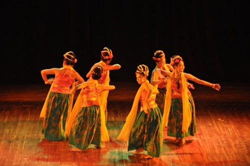
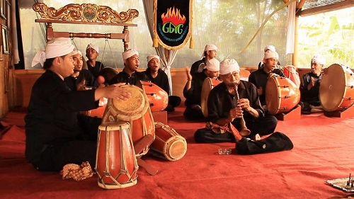
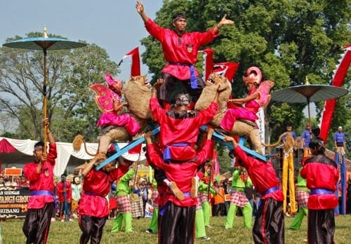
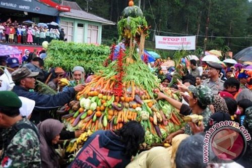
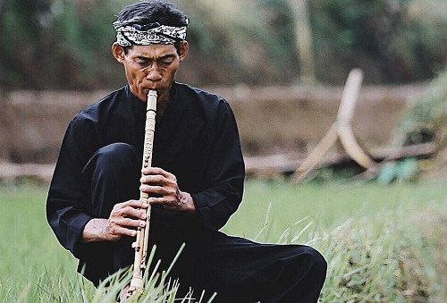

Subang Budaya
Kesenian Doger Kontrak
Doger merupakan bentuk kesenian rakyat yang berfungsi sebagai hiburan. yang tumbuh dan berkembang di daerah perkebunan Subang Jawa Barat pada masa pemerintahan Hindia-Belanda. Doger merupakan nama lain dari seni ronggeng yang muncul dari masyarakat kecil. dengan alat musik yang sederhana kelompok doger menghibur masyarakat perkebunan baik untuk bangsa Belanda maupun masyarakat pribumi.
Kesenian Gembyung
Gembyung adalah ensambel musik yang terdiri dari beberapa waditra terbang dengan terompet yang merupakan jenis kesenian bernafaskan islam. Meskipun demikian, di lapangan di temukan beberapa kesenian gembyung yang tidak menggunakan waditra terompet. Alat musiknya yaitu 4 buah kempling (kempling siji, kempling loro, kempling telu, dan kempling papat), Bangker dan Kendang. Gembyung merupakan jenis kesenian tradisional khas daerah subang yang sampai sekarang masih terus dimainkan. Gembyung biasa dimainkan untuk hiburan rakyat seperti pesta khitanan dan perkawinan atau acara hiburan lainnya dan juga digunakan untuk upacara adat seperti halnya ruatan bumi, minta hujan dan mapag dewi sri.
Kesenian Sisingaan
Kesenian sisingaan merupakan salah satu kesenian daerah yang sampai sekarang masih berkembang dengan baik didaerah subang, bahkan kesenian ini sudah terkenal sampai ke manca negara. Kesenian sisingaan telah dimainkan oleh rakyat subang pada saat melawan penjajahan dulu sebagai symbol pelecehan terhadap penjajah, yang pada waktu itu adalah negara agraris. Dimana lambang negara itu adalah singa atau negara yang ditakuti yang dinaiki oleh seorang anak kecil diatas punggungnya yang melambangkan bahwa rakyat subang tidak takut melawan penjajah pada saat itu. Sekarang kesenian sisingaan dimainkan untuk acara-acara khusus seperti penerimaan tamu kehormatan, acara khitanan anak dan sebagainya.
Budaya Nadran

Nadran adalah upacara adat para nelayan di pesisir pantai utara jawa, seperti Subang, Indramayu dan Cirebon yang bertujuan untuk mensyukuri hasil tangkapan ikan, mengharap peningkatan hasil pada tahun mendatang dan berdo'a agar tidak mendapat aral melintang dalam mencari nafkah di laut. Upacara Adat Nadran diselenggarakan secara rutin setiap tahun. Di kabupaten Indramayu, umumnya Upacara Adat Nadran diselenggarakan antara bulan Oktober sampai Desember yang bertempat di Pantai Eretan Kulon, Eretan Wetan, Dadap, Limbangan dan Karangsong. Sedangkan di kabupaten Subang, diselenggarakan di pantai Blanakan.
Budaya Ruwatan Bumi
Ruwatan berasal dari kata rawat atau merawa artinya mengumpulkan atau merawat yaitu mengumpulkan seluruh masyarakat kampung serta mengumpulkan semua hasil bumi, baik yang masih mentah maupun yang sudah diolah. Upacara ruwatan bumi ini dilaksanakan sebagai ungkapan rasa syukur terhadap tuhan Yang Maha Esa atas keberhasilan panen pertanian dan sebagai tolak bala serta ungkapan penghormatan terhadap nenek moyang mereka yang telah berjasa meningkatkan taraf hidup di kampung banceuy tersebut. Di kampung banceuy ini acara ruwatan bumi telah dilaksanakan semenjak tahun 1800 M.
Kesenian Toleat
Toleat merupakan salah satu jenis alat musik tiup (aerophone) khas daerah subang. Toleat biasa dimainkan oleh pengembala di daerah pantura sambil menunggu gembalaannya. Awalnya toleat dibuat dari bahan jerami karena perkembangan zaman dan keawetan bahannya maka sekarang toleat dibuat menggunakan bahan bambu tamiyang, tolet mempunyai nada dasar salendro dan mempunyai delapan lubang nada serta mempunyai suara yang unik menyerupai saxophone, bentuknya mirip dengan suling terapi mempunyai rit yang dibuat dari kayu berenuk.